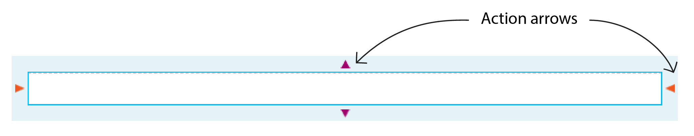
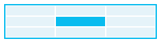

Using containers to create design layouts
Communications Designer uses containers to define email and web designs in an easy-to-create grid layout for HTML-based output. You can add new containers, modify existing containers, or remove containers in your designs, and add design objects (such as text boxes, tables, images, and so on) to each container to customize the layout and design based on your requirements. Because of this container-based nature, email and web designs can be used to create effective responsive designs that scale depending on the screen size of a viewing device.
When you first open an email or web design, the width of your design is set to the value that you specified when you created the design in Structure view. You can change the existing value to modify the width of your design.
To change the width, enter the width (in pixels) in the <design> width box in the properties panel.
The minimum width that you can enter is 150 pixels. The maximum width is 1200 pixels for email designs and 1920 pixels for web designs. If you modify the width of the design after you have added design objects, Communications Designer attempts to responsively adjust the dimensions and positions of the design objects.
To create a new container, you must select an existing container, and then click the appropriate action arrow. Action arrows are clickable icons that appear on a container edge, and the direction of the action arrow that you click determines the position of the new container that is created. When you create a new container, it is always created relative to an existing container in your design.
Note: Action arrows are visible only when a container is selected.

The following table lists the different types of action arrows and the placement of the new container that you can create using each type of arrow:
| Action arrow | Container placement |
|---|---|
|
|
Creates a new container in a new row above the selected container. If the selected container is present within a parent container, then the new container is also created within the same parent. |
|
|
Creates a new container in a new row below the selected container. If the selected container is present within a parent container, then the new container is also created within same parent. |
|
|
Creates a new child container to the left of the selected container. The contents of the existing container are not modified. The first time that a new container is added in this manner, both the existing container and the new container become child containers in the initially selected container. Subsequent containers are added to the same row, within the same parent container. |
|
|
Creates a new child container to the right of the selected container. The contents of the existing container are not modified. The first time that a new container is added in this manner, both the existing container and the new container become child containers in the initially selected container. Subsequent containers are added to the same row, within the same parent container. |
|
|
Creates a new child container in a new row above the selected container. The contents of the existing container are not modified. Both the existing container and the new container become child containers in the initially selected container. |
|
|
Creates a new container in a new row below the selected container. The contents of the existing container are not modified. Both the existing container and the new container become child containers in the initially selected container. |
To delete a container, select the container and press Del or Delete on your keyboard. Keep in mind that your design must contain at least one container. You cannot delete a container if it is the only container in a design.
When you use the object palette to add a design object to a container, keep in mind that you can place only one design object directly in a container; however, you can embed other objects in that design object as needed.
Tip: Because email and web designs resize automatically, if you need to restrict the way that some objects move when the output is viewed on a smaller screen, you can embed design objects into a table that is placed within a container.
To see the corresponding container properties for a selected object, click the Container properties button in the properties panel to open the Container card. When you select a design object inside a container, you can use the properties panel to modify the properties for the object.
id attributes to objects
When you create HTML-based output, the engine automatically applies a sequential id attribute to each element that represents a container or a design object in the generated HTML file. These id values can change with design updates.
To uniquely identify design elements in an HTML file, you can add custom id attribute values to objects except frames. You can use static text to specify an id attribute value. Each custom id attribute value that is used in the design must meet the following criteria:
-
It must contain at least one character
-
It cannot be longer than 128 characters.
-
It must begin with an ASCII letter.
-
It must contain only ASCII alphanumeric characters, hyphens (-), and underscores (_).
Tip: Communications Designer does not enforce the use of unique id attribute values. As a best practice, however, you should avoid using the same value for more than one object in a design.
To assign a custom id attribute value to an object:
-
In Design view, select the object to which you want to add a custom
idattribute value. -
On the General card in the properties panel, in the HTML id box, enter the attribute value.
When you create a new container, you can copy and paste the design objects from an existing container to reuse the layout and content from that container. You can copy only objects that are present in a container; you cannot copy the container itself. Make sure that the destination container is wide enough for the design object that you are copying.
| Action | Steps |
|---|---|
| Copy an object to a different container |
|
| Move an object to a different container |
Alternatively, to move an object, you can select the object and drag it to the destination container. |
After you create a container, you can open the Container card in the properties panel, and change the following properties on the container:
| Container property | Notes |
|---|---|
|
Background color |
When you apply a background color to a container, the color is visible in all blank areas and through transparent objects, including objects like text boxes and tables that do not have a color applied. By default, a new container does not have a background color applied. To apply a background color:
|
|
Padding <position> |
The spacing of the design object in a container from the container border is controlled by the padding settings. You can set separate values for the top, right, left, and right borders. The value that you enter into each Padding <position> box specifies the distance between the object and the container border. |
|
Alignment |
The position of the design object in a container relative to the container borders is based on its alignment setting, which you can specify using the Alignment grid shown in the following image.
 The Alignment grid is an intuitive way to select the relative position of the design object in your container. The alignment corresponds to the section of the grid that you select. To specify the relative position of the design object, click the corresponding section in the Alignment grid. |
| Column width (%) |
You can change the width of a container only if that container is one of multiple child containers present in the topmost parent container. If your design contains a single container in each row, the width of that container is always the same as the width of the design body. The height of a container is determined by the content present within it. However, if needed, you can use the padding settings to manipulate the height of a container. To change the width of a container, select the container, and then enter the width of the container in the Column width (%) box. The width of a container is determined as a percentage of the width of its parent container. Alternatively, you can click the sizing handles on the container and drag the border to make the container wider or smaller as needed. |
|
Hide on <device> |
Use the following settings to control the design elements that are visible on desktop or mobile devices:
When you enable these responsive design features, the Exstream engine adds media query styles to the automatically generated CSS styles that detect the viewport of the viewing device to display only those design elements that are not hidden for that device. |
|
Rotate on mobile |
When a design is viewed on a mobile device, by default, any container row with multiple child containers in it is rotated so that the child containers from left to right are vertically stacked top to bottom in the same order. To retain the left to right orientation of the child containers even when the design is resized for smaller screens, clear the Rotate on mobile check box. |